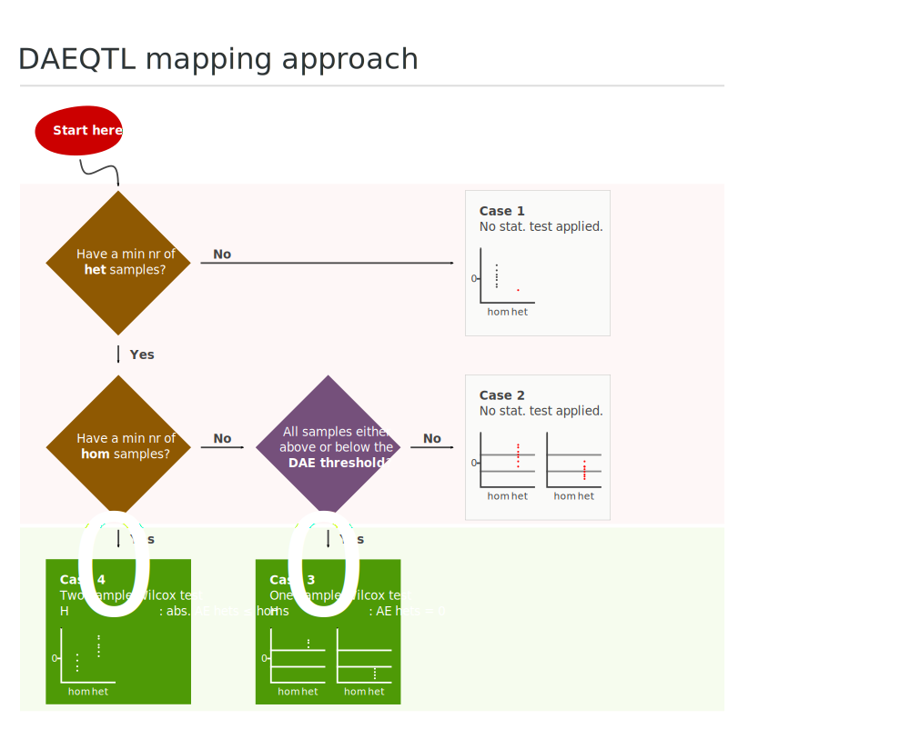
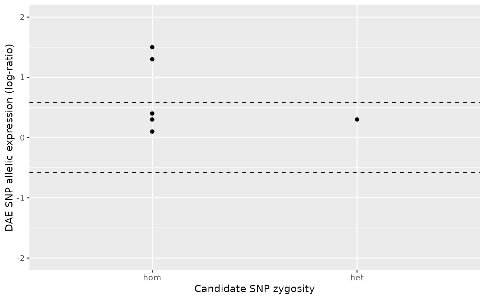
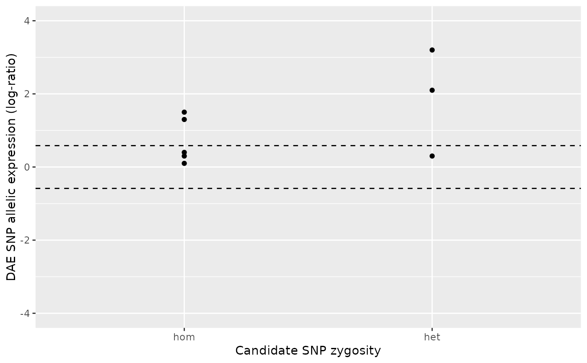
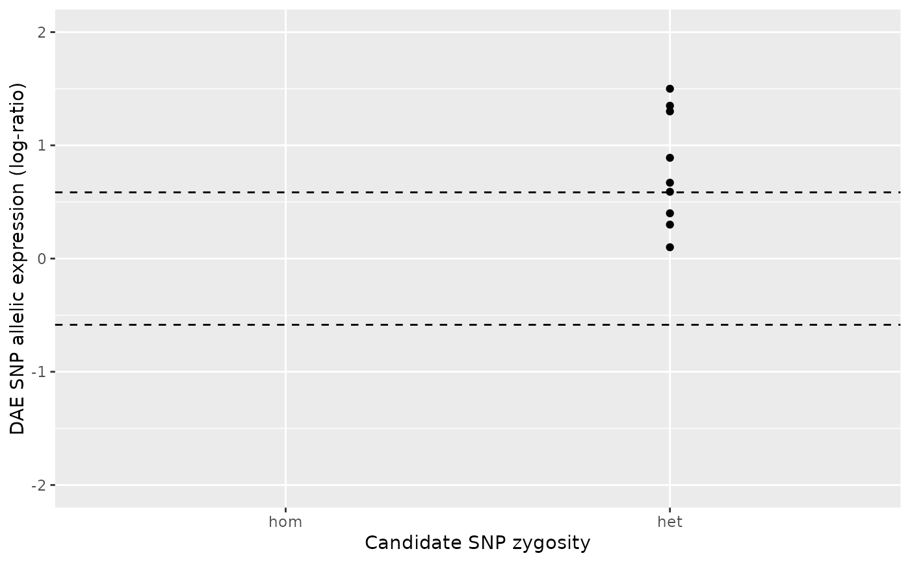
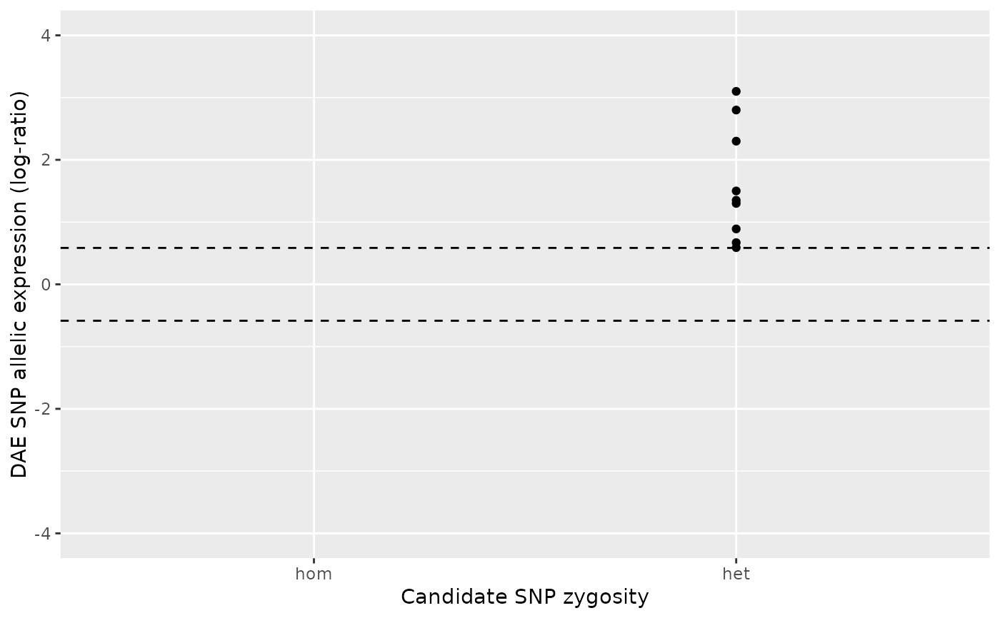
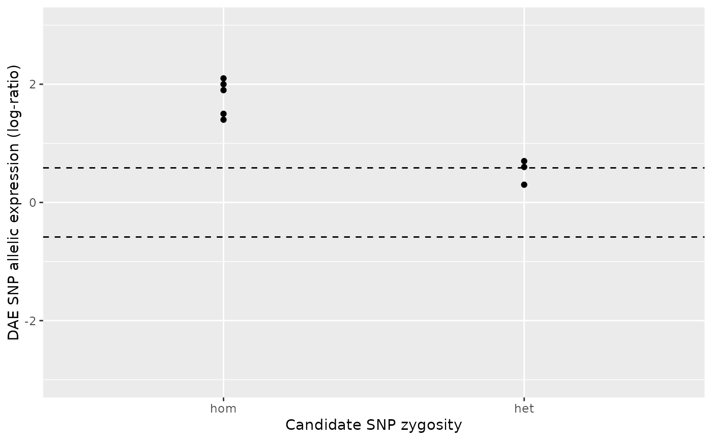
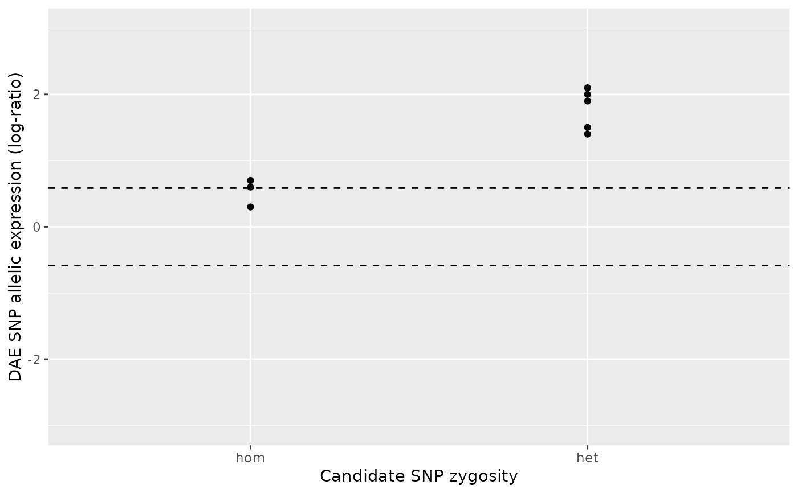
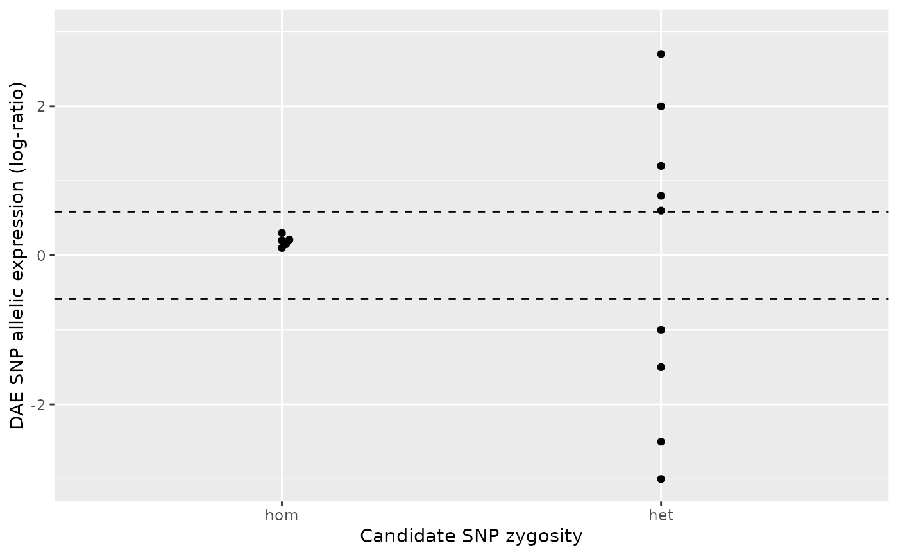
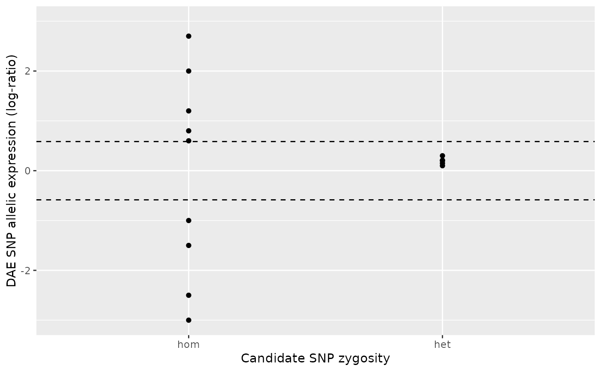

This function implements daeqtlr's default approach for testing the association between a candidate SNP zygosity and the allelic expression of a DAE SNP. The method takes into account the pattern of the allelic expression (AE) ratios' distribution displayed at each DAE SNP (depicted below), as this is dependent on the linkage disequilibrium between the DAE SNP and the candidate SNP. In some cases the requirements for application of this methodology are not met and no measure of statistical association significance is derived. These cases are depicted in the figure below, and further explained in the section Value.

Usage
daeqtl_test(
ae_hom,
ae_het,
dae_threshold = log2(1.5),
min_n_hom = 2L,
min_n_het = 2L
)Arguments
- ae_hom
Numeric vector of AE ratios of the DAE SNP. Each element of the vector refers to a sample that is homozygous (
hom) for the candidate SNP.- ae_het
Numeric vector of AE ratios of the DAE SNP. Each element of the vector refers to a sample that is heterozygous (
het) for the candidate SNP.- dae_threshold
An allelic expression (AE) threshold (in log-scale). A sample showing an absolute AE greater than
dae_thresholdis considered "technically" differential allelic expressed, meaning that the imbalance observed is not below the limit of detection. Adjustment made to this parameter should depend on the experimental assay sensitivity.- min_n_hom
Minimum number of samples in the homozygous group to be considered eligible for statistical testing.
- min_n_het
Minimum number of samples in the heterozygous group to be considered eligible for statistical testing.
Value
A data frame of two columns:
- pvalue
The p-value associated with the statistical test, if performed; otherwise,
NA.- case
One of the four possible cases depicted in the figure above. The identified case depends on the number of samples for each group and on the pattern of the allelic expression (AE) ratios of the DAE SNP:
1Case 1: the number of samples for which the candidate SNP is heterozygous and DAE SNP expression is available is below the minimum eligibility criterion
min_n_het.2Case 2: (i) the number of samples for which the candidate SNP is homozygous is below
min_n_hom, and also, (ii) the values of the DAE SNP AE ratios are not all either below or above thedae_threshold.3Case 3: the number of samples for which the candidate SNP is homozygous is below
min_n_hom, however, the values of the DAE SNP AE ratios are all either below or above thedae_threshold. This case is followed by a one-sample Wilcox test whose null hypothesis is that the AE ratios are zero.4Case 4: when both a minimum number of heterozygous and homozygous samples for the candidate SNP are available, then a Wilcox test is applied that compares the two groups. The AE ratios are first transformed to absolute values. This is because we want to test departure from zero in either direction. The null hypothesis is that absolute AE ratios for the heterozygous group is less than or equal to the homozygous group.
Examples
#
# Case 1
#
# The number of heterozygous samples (n = 1) does not meet the minimum
# required (default is `min_n_het` = 2). Hence, no statistical test is
# applied, the `pvalue` is `NA` and `case` is `1`.
#
ae_hom <- c(0.3, 0.1, 1.3 , 1.5, 0.4)
ae_het <- 0.3
daeqtl_test(ae_hom = ae_hom, ae_het = ae_het)
#> pvalue case
#> 1 NA 1
daeqtl_plot(ae_hom = ae_hom, ae_het = ae_het)

# Be stricter with the number of heterozygous samples, e.g. `min_n_het = 4L`.
#
ae_het <- c(0.3, 2.1, 3.2)
daeqtl_test(ae_hom = ae_hom, ae_het = ae_het, min_n_het = 4L)
#> pvalue case
#> 1 NA 1
daeqtl_plot(ae_hom = ae_hom, ae_het = ae_het)

#
# Case 2
#
# The number of homozygous samples does not meet the minimum requirement
# (default is `min_n_hom` = 2) and also the AE ratios are not either all
# above or all below the DAE threshold (`dae_threshold`).
#
ae_hom <- numeric()
ae_het <- c(0.3, 0.1, 1.3 , 1.5, 0.4, 0.59, 0.67, 0.89, 1.35)
daeqtl_test(ae_hom = ae_hom, ae_het = ae_het)
#> pvalue case
#> 1 NA 2
daeqtl_plot(ae_hom = ae_hom, ae_het = ae_het)

#
# Case 3
#
# The number of homozygous samples does not meet the minimum requirement
# (default is `min_n_hom` = 2) but the AE ratios are either all above or all
# below the DAE threshold (default is `dae_threshold = log2(1.5)`). Hence, a
# one-sample Wilcox test is applied to test the null hypothesis that the
# AE ratios for the heterozygous group is significantly different from zero.
#
ae_hom <- numeric()
ae_het <- c(2.8, 3.1, 1.3 , 1.5, 2.3, 0.59, 0.67, 0.89, 1.35)
daeqtl_test(ae_hom = ae_hom, ae_het = ae_het)
#> pvalue case
#> 1 0.009151689 3
daeqtl_plot(ae_hom = ae_hom, ae_het = ae_het)

#
# Case 4
#
# Both the number of homozygous and heterozygous samples are equal or
# above the minima defined by `min_n_hom` and `min_n_het`. Hence, a
# two-sample Wilcox test is applied to test the null hypothesis that the
# absolute AE ratios for the heterozygous group is less than or equal to
# those of the homozygous group.
#
# Example: Both groups show imbalance above zero, i.e. show preference for
# the same allele. However, the imbalance magnitude of the heterozygous group
# is clearly below that of the homozygous group, resulting in a
# non-significant p-value.
#
ae_hom <- c(1.9, 2.1, 2 , 1.5, 1.4)
ae_het <- c(0.3, 0.6, 0.7)
daeqtl_test(ae_hom = ae_hom, ae_het = ae_het)
#> pvalue case
#> 1 0.9914637 4
daeqtl_plot(ae_hom = ae_hom, ae_het = ae_het)

# Example: the exact reverse of the previous example.
#
ae_hom <- c(0.3, 0.6, 0.7)
ae_het <- c(1.9, 2.1, 2 , 1.5, 1.4)
daeqtl_test(ae_hom = ae_hom, ae_het = ae_het)
#> pvalue case
#> 1 0.01844421 4
daeqtl_plot(ae_hom = ae_hom, ae_het = ae_het)

# Example: the heterozygous group clearly shows greater imbalance (greater
# departure from zero) than the homozygous group, resulting in a significant
# p-value.
#
ae_hom <- c(0.1, 0.3, 0.2 , 0.21, 0.15)
ae_het <- c(0.6, 0.8, 1.2, -1.5, -3, -2.5, -1, 2, 2.7)
daeqtl_test(ae_hom = ae_hom, ae_het = ae_het)
#> pvalue case
#> 1 0.001676718 4
daeqtl_plot(ae_hom = ae_hom, ae_het = ae_het)

# Example: the exact reverse of the previous example.
#
ae_hom <- c(0.6, 0.8, 1.2, -1.5, -3, -2.5, -1, 2, 2.7)
ae_het <- c(0.1, 0.3, 0.2 , 0.21, 0.15)
daeqtl_test(ae_hom = ae_hom, ae_het = ae_het)
#> pvalue case
#> 1 0.9989177 4
daeqtl_plot(ae_hom = ae_hom, ae_het = ae_het)
